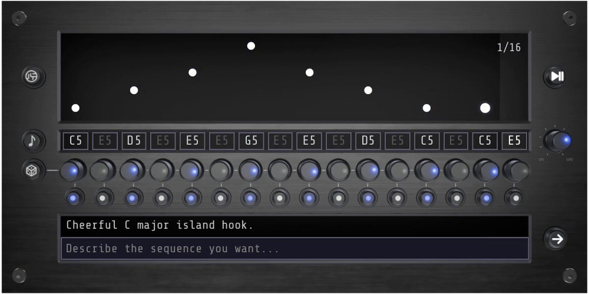
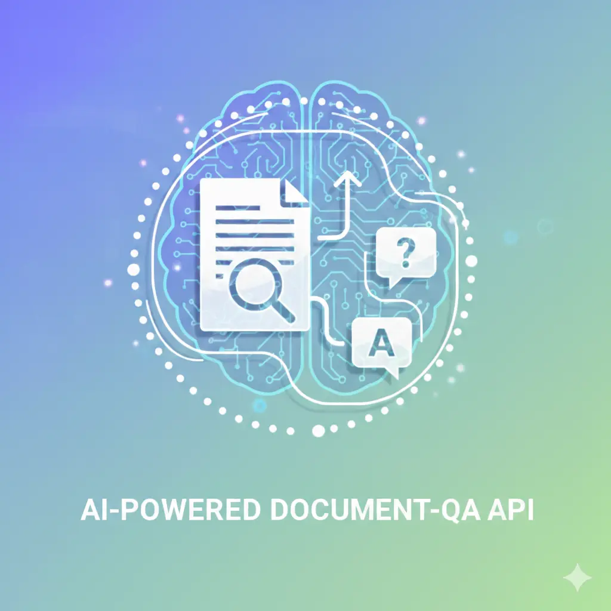
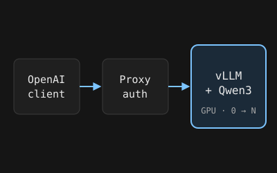
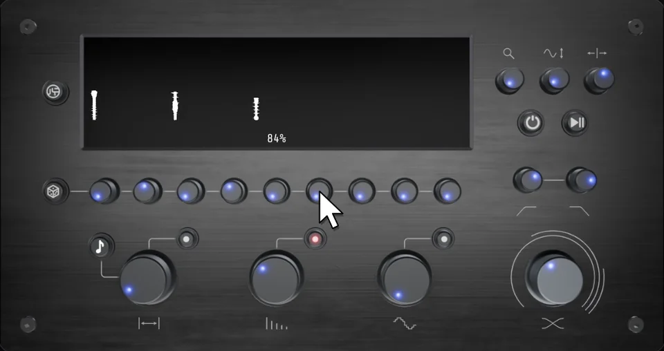
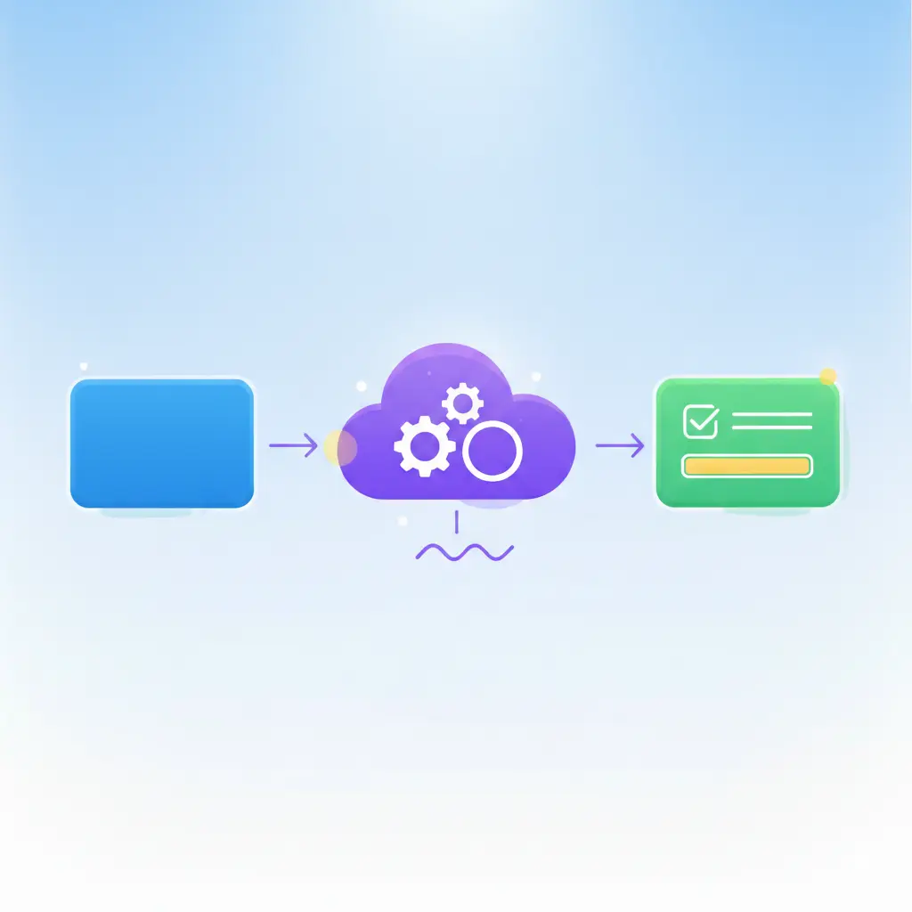
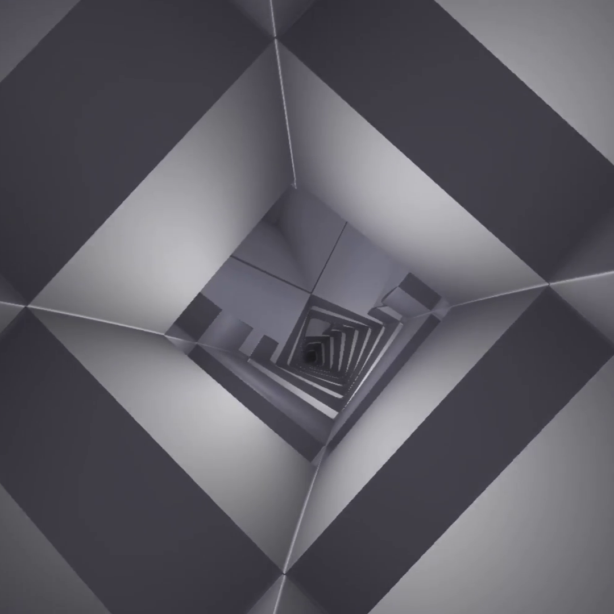

Nicolás Japas
I build production GenAI systems end-to-end: the retrieval layer, agent orchestration with LangGraph, and the APIs and interfaces that put them in front of real users.
German and Argentine citizen. No visa or sponsorship needed in the EU. Based in Lisbon, working remotely across European time zones.
Selected projects

Sequoia: AI MIDI SequencerNEW
A free VST3 plugin where you describe a melody in plain words and a fine-tuned model writes the notes, fully offline on your own CPU.
Fine-tuned Qwen3-0.6B with LoRA (Unsloth) on ~2,000 examples distilled from DeepSeek V4 Pro or generated in code and filtered by music-theory checks, then quantized to a ~400 MB GGUF. llama.cpp is linked into the C++/JUCE plugin and runs on a low-priority thread so audio is never blocked, with a GBNF grammar guaranteeing valid output. Every model is scored on a fixed 158-request eval (code checks plus a Gemini judge) before it ships.

AI Document Q&A API
RAG backend for question answering over private documents, built for retrieval quality and measurability.
Hybrid BM25 + vector retrieval with RRF fusion and Voyage rerank-2.5, a Ragas evaluation harness, and Prometheus metrics. Multi-provider LLM routing (Gemini, DeepSeek, self-hosted Qwen3 via Modal), JWT auth with per-user document isolation, and runtime model switching.

Bender AI: Serverless LLM Inference
Self-hosted Qwen3 on serverless GPUs behind an OpenAI-compatible endpoint, for workloads where the acceptable data risk is zero.
vLLM on Modal: switching from a hosted provider is a one-line config change, idle cost is zero, and no data reaches a model provider. Cold starts of 1–2 minutes are the trade-off.

Digital Decay (Japas Audio)
A commercial delay plugin with wave-shaping and distortion, per-tap control, and visualization. Windows VST3 with a 7-day free trial.
Founded Japas Audio and own the full product: DSP design, signal chain, 3D UI, and commercial delivery. Short demos and tutorials are on YouTube.

EduBridge LTI
LTI 1.3 Tool Provider that auto-grades essays and syncs scores to the Moodle gradebook.
FastAPI implementation of OIDC login, JWT validation, launch claim persistence, OAuth 2.0 (private_key_jwt), and Assignment & Grade Services (AGS).

Menger World
An infinite fractal corridor you can fly through and talk to. A voice agent reshapes the 3D scene as the conversation changes.
Raymarched in pure WebGL/GLSL with zero frontend dependencies. The agent calls a typed tool that mutates live shader state (rounding, domain warp, breathing speed, density, color). Two interchangeable backends behind one FastAPI WebSocket server: ElevenLabs Conversational AI for low-latency voice-to-voice, and a LangGraph path with Groq-hosted Llama 3, Pydantic outputs, and local Piper TTS.
Experience
Senior AI Engineer · PwC AppDev (B2B contract)
- Retrieval layer of a production conversational AI assistant: hybrid search over Amazon OpenSearch Serverless (vector kNN with metadata filtering, SigV4 auth), Bedrock Titan v2 embeddings, and chunk re-ranking to control answer precision.
- Ingestion path that keeps retrieval current: a scheduled crawler that diffs source-of-truth content into the knowledge base.
- Full service boundary: React 18 SPA, FastAPI/Pydantic API on AWS Lambda, and a LangGraph agent using function calling with structured response types (text, action buttons, data cards).
- Test-driven delivery with structured logging and monitoring, shipped through enterprise QA and security review alongside data scientists and DevOps.
Independent Senior AI Engineer / Founder · Japas Audio
- Built and released Sequoia, a free VST3 MIDI sequencer running a LoRA fine-tuned Qwen3-0.6B offline via embedded llama.cpp, with its data pipeline (~2,000 examples) and a 158-request eval using code checks and an LLM judge.
- Released Digital Decay, a commercial VST plugin (C++, JUCE, DSP), owning the signal chain from DSP design through 3D UI and distribution.
- Also built a self-hosted LLM inference stack, a hybrid-retrieval RAG service and a real-time voice agent (see Projects).
Full-Stack Engineer, Backend & Cloud · Brother Industrial EMEA
- Core backend services for Myze, a B2B SaaS platform for industrial print-on-demand serving ~30 companies across Europe.
- Event-driven serverless infrastructure (Lambda, EventBridge, API Gateway, DynamoDB) for multi-step order workflows and cross-company fulfillment.
- Multi-tenant REST APIs (OpenAPI) with JWT/OAuth2 and Cognito, least-privilege IAM, and time-limited demo accounts with automatic tier downgrade via EventBridge.
- Shopify GraphQL ingestion and ShipStation/SendCloud shipping with automated customs documentation.
- Full-stack delivery in TypeScript and React; maintained Jest, Cypress, and Playwright suites and the Electron desktop client.
Software Engineer · Data Zoo GmbH
- Productionized ML forecasting models via SageMaker-backed APIs for industrial time-series applications.
- Processing pipelines (DuckDB, Datashader) and custom JupyterLab extensions (Plotly) for high-density datasets.
Mechanical Engineer, University Professor · XPAK USA, TECNA, UNA
- Designed automated production machinery and taught at university in Argentina. Moved to Germany in 2018 and transitioned into software engineering.
Certifications
- Claude Certified Architect – Professional
- Neo4j Certified Professional
- HashiCorp Terraform Associate (004)
- AWS Solutions Architect – Associate
Tech stack
AI / LLM
Languages
Backend
Cloud & Infrastructure
Data
Frontend & Testing
Audio / DSP
Education, honors & languages
Data Analytics, Ironhack (2021)
M.A. Music Theory and Composition, Universidad Nacional de las Artes (2007–2012, grade
9.45/10)
Studies in Mathematics, Universidad de Buenos Aires
Electronics Technician, ITSB
- Hackshow Winner, Ironhack Berlin (2021)
- National Finalist, Argentine Mathematical Olympiad (OMA)
- First Prize, National String Orchestra Composition Competition
Spanish: Native · English: C2 · German: B2 (telc) · Portuguese: A2